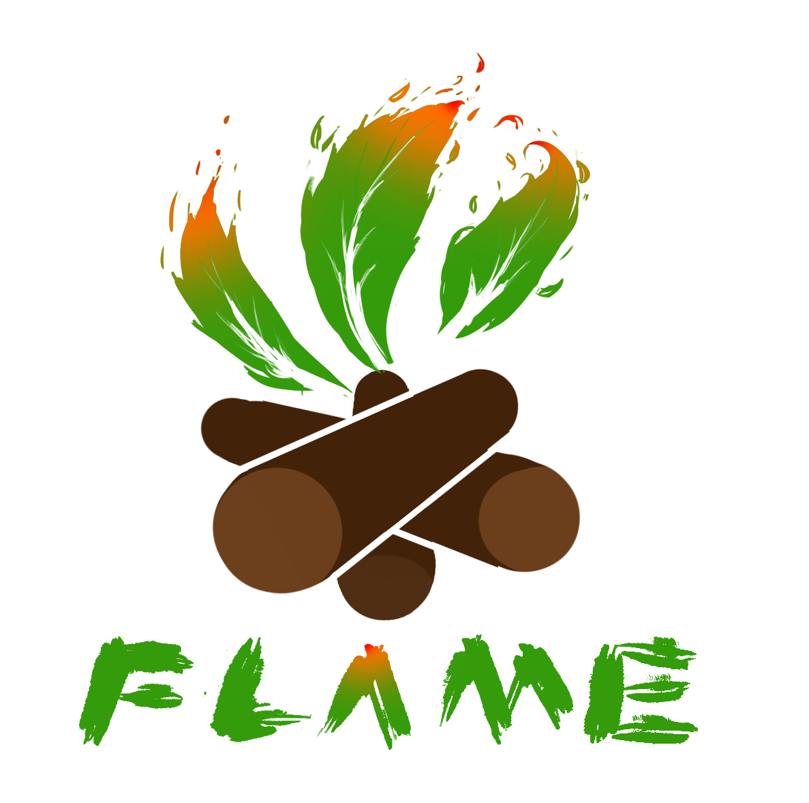
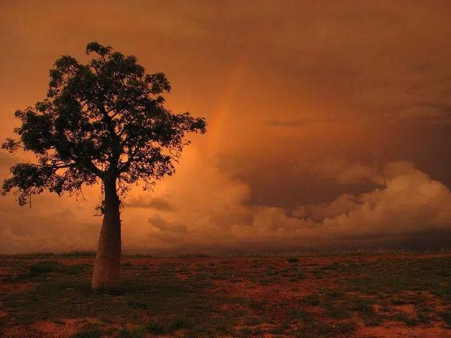
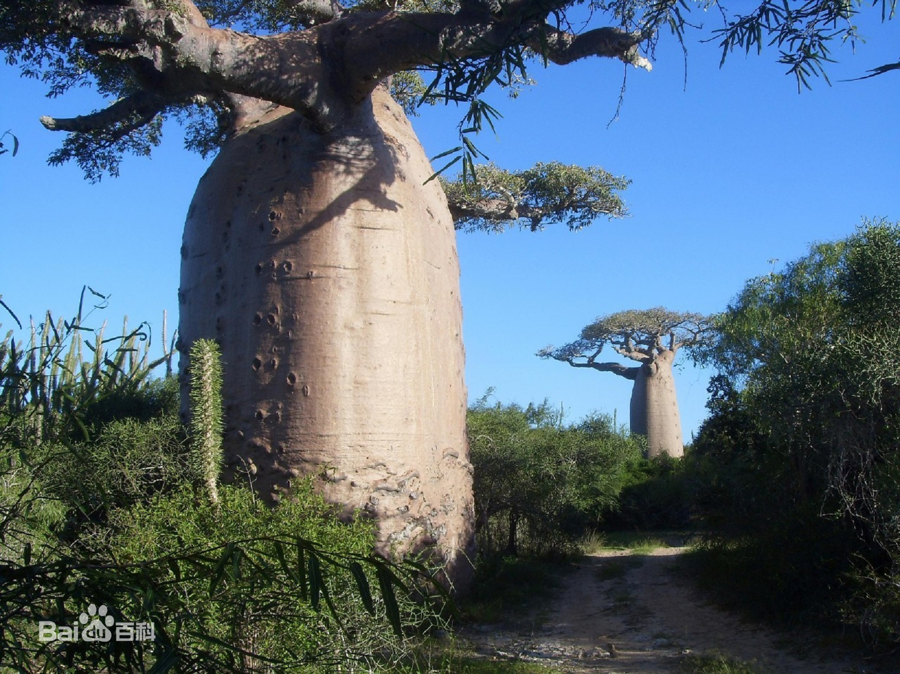
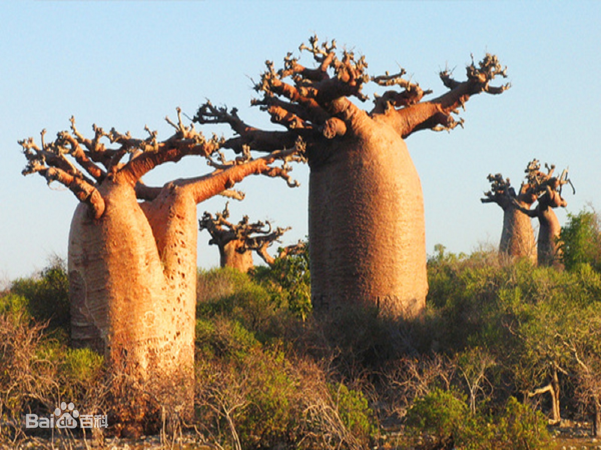
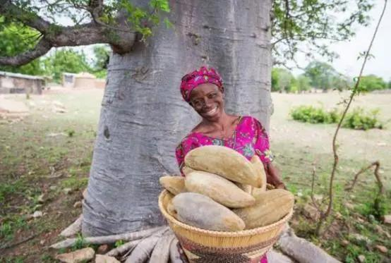
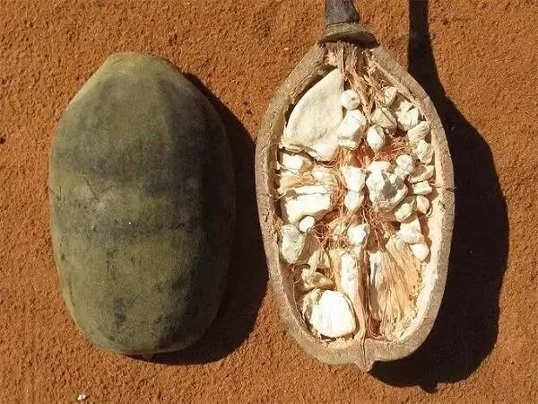

猴面包树
猴面包树（学名：Adansonia digitata L.）又叫波巴布树、猢狲木或酸瓠树，是木棉科、猴面包树属的大型落叶乔木，分布于南非、博茨瓦纳、坦桑尼亚和马达加斯加等位于热带或亚热带非洲的国家，分布地局限于气候炎热、干燥的地区 。树干内部组织中贮水，高约20米左右。

在大约2.4亿年前，原本生长在一块儿的猴面包树随着冈瓦纳大陆的分裂四散而开，到了现在，猴面包属仅存八个物种，其中有六个物种生活在马达加斯加岛除东部以外的其他地区，另外两种零星分布在非洲大陆和澳大利亚西北部。
猴面包那粗大的树干，看起来就像个小水塔一样。为什么叫“猴面包树”？其实很好理解。顾名思义，这种树结出的椭圆形果实巨大，形状酷似面包一样，且果肉甘甜多汁，是猴子和猩猩十分喜爱的食物，故而得名。
实际上，猴面包树的木质很疏松，虽然外表看上去很粗壮，但内在都是中空的“假茎”结构，因此当非洲雨季来临时，它这种不太致密的木质结构就能大量吸水并将其储存在体内（最多可存12000升）。同时当地人也利用猴面包树的这个特性，在确保不伤及树根本的情况下，使用槽子在树干上打个洞出来蓄水，这样到了旱季，就能从这里获得水源。


它的果实、枝叶等可食用，有药用与经济价值
它的果实肉多汁多、酸甜可口，是果腹充饥之物，不仅猴子爱吃，人们将其烤制后松软香甜、味道更佳。果肉富含维生素C及微量无素，有较高抗氧化成分，可生吃，还可制作成清凉的饮料和调味品；外壳还可当瓢用。
在非洲几次大饥荒时代里，这种“天然面包”就代替食物拯救了无数非洲饥民的性命。
籽粒炒熟后可当零食；烘焙研磨后可当咖啡喝；将籽提炼为食用油，比花生油好吃。
它的树皮富含纤维素，很早以前人们用其织成布，也可做成绳子与器弦，还可造纸。
非洲蔬菜少，树叶成了是当地人喜爱的蔬菜，它富含维生素和钙质，做成汤很美味，捣碎可做调料，溶于牛奶还能作成可口的饮料。

